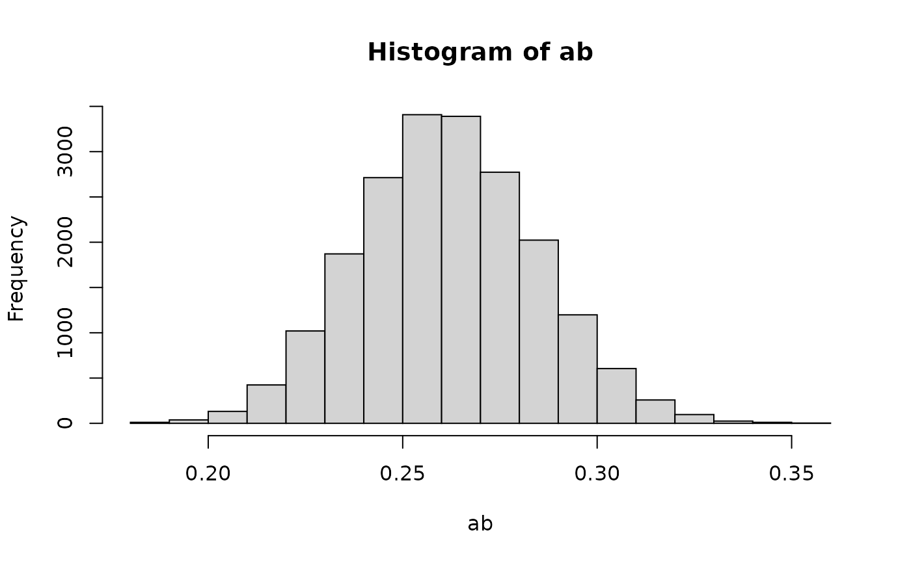

Calculates Monte Carlo confidence intervals
for parameters defined using the := operator in lavaan.
mc(object, R = 20000L, alpha = c(0.001, 0.01, 0.05), plot = TRUE)
| object | lavaan object
with defined parameters using the |
|---|---|
| R | Integer. Number of Monte Carlo replications. |
| alpha | Numeric vector.
Significance level \(\alpha\).
Default value is |
| plot | Logical.
If |
Returns a matrix with the following columns:
Estimate of indirect effect.
Standard error of Monte Carlo simulated indirect effect.
Confidence limits \(\frac{\alpha}{2} , 1 - \frac{\alpha}{2}\).
Ivan Jacob Agaloos Pesigan
#>#>n <- 1000 x <- rnorm(n = n) m <- 0.50 * x + rnorm(n = n) y <- 0.25 * x + 0.50 * m + rnorm(n = n) data <- data.frame( x, m, y ) model <- " y ~ cp * x + b * m m ~ a * x ab := a * b " object <- sem( data = data, model = model ) # Monte Carlo mc( object = object, R = 20000L, alpha = c(0.001, 0.01, 0.05), plot = TRUE )#> est se ci_0.05 ci_0.5 ci_2.5 ci_97.5 ci_99.5 ci_99.95 #> ab 0.2614 0.0229 0.1899 0.2048 0.2182 0.3076 0.3221 0.3412